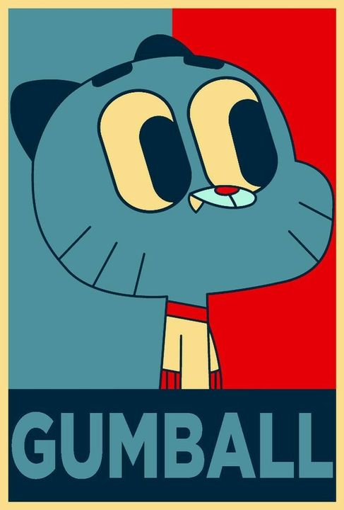

Bienvenido a nuestro sitio web
- + Ultimas noticias
- + Informacion confiable
- + Fuentes fiables
- + Informacion en tiempo real
- + Libre de virus(casi)
- + libre de publicidad
- + Con esfuerzo en cada publicacion


8 de mayo del 2022

Jake el perro, también conocido en ser unos de los
protagonistas de la serie animada “Hora de aventura”. El primero
de abril, Jake el perro ataco a un ciudadano paseando por el
parque cuando con comida, Jake lo persiguió y ataco para poder
robarle ese pedazo de comida para el poder saciar su gran
apetito dejando al hombre con heridas graves.
El ciudadano ha demandado a Jake el perro por las múltiples
heridas ocasionadas en ese días
3 de mayo del 2022
Humaru-chan, conocida por protagonizar el anime “Himouto
Humaru-chan entra en conflicto por uso de un stiker que la gente
está usando sin control. Humaru reclama para que no usen mas
ese stiker pero los fanáticos se niegan al dejarlo de usar.
Humaru-chan tras esto decide no participar más en el
anime (dejándolo en pausa) hasta que dejen de usar el stiker de
ella, los fanáticos tras escuchar esas noticias deciden no seguir
usando ese stiker, sin embargo, aún hay quien usa ese stiker
6 de mayo del 2022

Los protagonistas de la serie animada "Los backyardigans" hacen una alianza con el mono curioso Jorge, la alianza fue formada para poder obtener la recompensa de la captura de Arianny Palencia, acoraron en dividirse equitativamente la recompensa.
Al parecer ellos y muchos más estan haciendo una alianza para poder ser los primeros en capturar a la fugitiva, un claro ejemplo de estas alianzas son Luffy y Trafalgar Law junto a su tripulación de piratas de piratas
9 de mayo del 2022

El capitán de los piratas de sombrero de paja "Luffy" junto al capitán de los piratas de corazón "Law", nuevamente hacen una alianza para la captura de la fugitiva Arianny, siendo el grupo más fuerte hazla el momento para la captura de la fugitiva.
El pirata Luffy dice que usara el dinero de la recompensa para gastarlo en carne, mientras Torao (law) se niega en gastar el dinero de una forma tan boba
1 de mayo del 2022

Este primero de mayo el personaje de Gumball se lanza a candidato de presidente y en sus discursos dice que va haber pizza, cola para todos y un fin de semana de 7 días."Discurso".
Muchos están preocupados que Gumball sea presidente por miedo a la robolución ya que parece peligroso por la posible exterminación de los humanos.
Pero muchos otros ignoran esta posible gran amenaza embobados por la pizza, los días libres y los sirvientes, muchas personas están en Buelga y otros afirman que Gumball es el presidente que todos necesitan
Pero Gumball no se queda de manos cruzadas ya que está empezando hacer más campañas diciendo que la robolución no pasara, sus ingenieros y programadores afirman que la robolución es solo una fantasía de gente loca. El pueblo tras esa noticia hace que algunos se calmen y otros se molesten aún más por decir que sus preocupaciones es de gente loca, ya que esos comentarios los han ofendido
Edward Romero - Juan Carrero